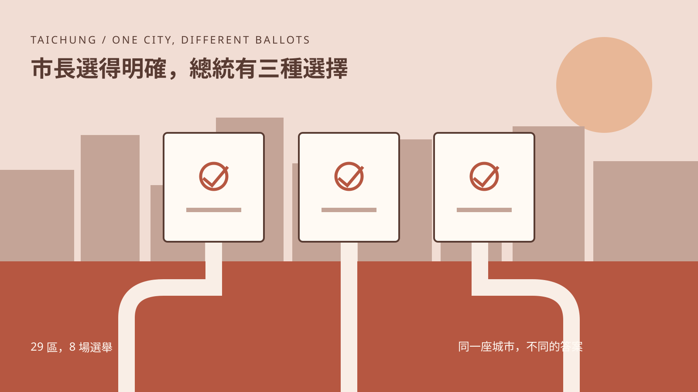
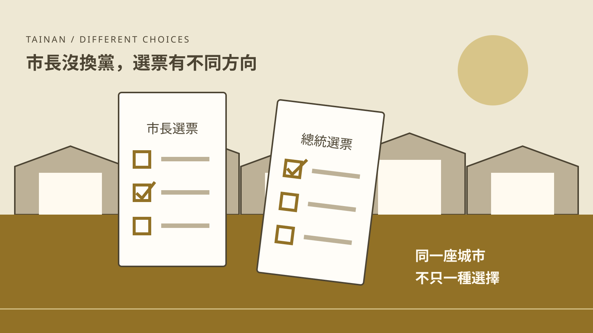

台北四選區／逐里選票
台北四選區／逐里選票台北｜立委一直選藍，總統卻未必
拆開台北四個立委選區、222個里的選票，對照2014–2024年總統、立委與市長選舉，看見政黨基本盤的延續與邊界。
INTERACTIVE NEWS INDEX / 2026
每一個題目，都用它自己的資料結構來說話：
名單、席位、批號、證據與預算。
14 個進行中的專題
所有判斷均附可回查來源
台北四選區／逐里選票拆開台北四個立委選區、222個里的選票，對照2014–2024年總統、立委與市長選舉，看見政黨基本盤的延續與邊界。
 山地原住民鄉／資料探索
山地原住民鄉／資料探索30個山地鄉區，十次選舉。縣市長選舉的投票率平均高出所屬縣市，總統選舉卻比較低。從茂林的九成投票率，看數字與還沒有答案的問題。

台中選舉／資料探索盧秀燕領先29區，總統選票卻分成三股。從北屯到海線，看市長票之外的不同期待。

台南選舉／資料探索2024年，近四分之一選票投給柯文哲。從37區看綠營多數之外的選擇，也看市長選舉中的拉鋸。
 高雄選舉／資料探索
高雄選舉／資料探索從嘗試不同的選擇，到罷免、再選與連任。回看高雄38區走過的政治轉折。
 新北選舉／資料探索
新北選舉／資料探索首長連勝，總統選票卻有不同方向。從 29 區的歷次選擇，探索選民的政治期待。
 台北選舉／資料探索
台北選舉／資料探索探索三十年總統與市長選票，對照各區里的投票率與得票變化。
240 天裡
誰做了決定？
以通報、風險評估與安置決策，逐一對照市府說明與外界質疑。
一桶油的
交接紀錄
沿著供應鏈，分清每一關的處置、責任與仍待釐清之處。
空著的
不是一張椅子
用席位與程序看懂不同機關的缺額，及卡關發生在哪一步。
三張
國手名單
在球員履歷與賽事資格中，理解一份徵召名單。
每一則說法
都有狀態
將指控、回應、調查與更正，放回來源可追的事件紀錄。
一份預算
留下什麼
以預算、治理與公共服務三條線，閱讀持續中的制度問題。
疫苗進到
手臂之前
先看疫苗如何抵台、如何開放施打；再回到不同立場的說法與來源。